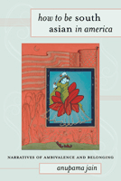

<body bgcolor="#FFFFFF" text="#000000" link="#0000FF" vlink="#CC0000" alink="#CC0000"><center><hr width="350" size="1" align="center" noshade>A variety of immigrant narratives portray the dynamic process of South Asian Americanization<hr width="350" size="1" align="center" noshade><p><a href="https://cdcshoppingcart.uchicago.edu/Cart/ChicagoBook.aspx?ISBN=9781439903025&&PRESS=temple" target="_top">Buy this book!</a> | <a href="https://cdcshoppingcart.uchicago.edu/Cart/Cart.aspx?PRESS=temple" target="_top">View Cart</a> | <a href="https://cdcshoppingcart.uchicago.edu/Cart/Cart.aspx?PRESS=temple" target="_top">Check Out</a></p><p></p></center><!--none//--><h1>How to Be South Asian in America</h1>
<H2>Narratives of Ambivalence and Belonging</H2>
<h3>anupama jain</h3>
<P>cloth 1-4399-0302-6 $70.50, Mar 11, <FONT COLOR=#990033>Available</FONT>
<br>paper 1-4399-0303-4 $29.95, Mar 11, <FONT COLOR=#990033>Available</FONT>
<br>Electronic Book 1-4399-0304-2 $29.95 <FONT COLOR=#990033>Available</FONT>
<BR> 288 pp
6x9
</P><BLOCKQUOTE><I>"jain�s use of literary texts, films, interviews, and participant observation data offers an integrated, multidisciplinary approach to studying belonging, and she combines her approaches well. jain draws upon every major scholar, which is quite a feat. Overall, an impressive book."</I>
<BR>&#151<B>Bandana Purkayastha</B>, University of Connecticut, and author of <I>Negotiating Ethnicity: Second-Generation South Asian Americans Traverse a Transnational World</I></I></BLOCKQUOTE>
<p>Providing a useful analysis of and framework for understanding immigration and assimilation narratives, anupama jain's <em>How to Be South Asian in America</em> considers the myth of the American Dream in fiction (Meena Alexander's <em>Manhattan Music</em>), film (<em>American Desi, American Chai</em>), and personal testimonies. By interrogating familiar American stories in the context of more supposedly exotic narratives, jain illuminates complexities of belonging that also reveal South Asians' anxieties about belonging, (trans)nationalism, and processes of cultural interpenetration.
</p>
<p>jain argues that these stories transform as well as reflect cultural processes, and she shows just how aspects of identity&#8212;gender, sexual, class, ethnic, national&#8212;are shaped by South Asians' accommodation of and resistance to mainstream American culture.
</p>
<BR>&nbsp;<h2>Excerpt</h2><P>Excerpt available at <a href="http://www.temple.edu/tempress">www.temple.edu/tempress</a></p>
<BR>&nbsp;<h2>Reviews</h2>
<p><I>"</I>How to Be South Asian in America<I> analyzes narratives of nation to demonstrate their influence on contemporary possibilities for assimilation in the United States. What gives jain's book a fresh profile is its structure: she has chosen to analyze film, novels, and social history�in particular, the migration of Guyanese to Schenectady. This tripartite organization offers a more complete account than most other books on this topic, and the examples are all strong and well-argued." </I><br>&#151<b>John Hawley</b>, Santa Clara University, and author of <i>Amitav Ghosh: An Introduction</i>
<p><i>"A sprawling study that combines ethnography, literary theory, and film criticism, jain�s book looks closely at narratives of South Asian American identity that circulate through the media, fiction, and film....jain [provides] a series of skillful readings of diasporic fiction and films.... [her] reading of Bharati Mukherjee�s work, in particular, is compelling.... jain�s book doesn�t offer any easy answers, but instead gives us more questions: What exactly are the stories of national, racial, and ethnic identity that we have been telling ourselves? Who is allowed into America�s national narratives? And on whose terms?" </i><br>&#151<b><i>Hyphen</i></b>
<p><i>"[j]ain shows how the literary and cinematic works she studies represent these aspirations to attain the 'American dream,' the ways of achieving them, and often of failing to do so; she also explores the agency available to fictional representatives of this community and the profound ambivalence many of them felt, be they Hindu, Muslim, Parsee, etc. [j]ain is a perceptive reader and elegant writer, and her observations on subjects' representation of the South Asian diaspora's urgent desire to belong, coupled with their 'audacious refusal to become [America's] Other,' deserves a wide readership. Summing Up: Highly recommended."</i><br>&#151<b><i>Choice</i></b>
<p><i>"Jain provides an impressive accounting of scholarly literature on diasporic identity and assimilation, attentive readings of South Asian American novels and films, and a model for new directions in the interdisciplinary field of 'Asian American postcolonial feminist cultural studies'.... She proves herself a skillful and attentive reader, able to bring theoretical insights to bear on the texts, but also able to bring forth the texts� own ambivalent, fraught, mundane, and at times joyous conclusions about the necessity of Americanization. This ethic of reading and her groundbreaking work on recently arrived and working-class Indian immigrants from Guyana are Jain�s most significant interventions."</i> <br>&#151<b><i>American Studies</i></b>
<p><i>"[A]n insightful investigation of select assimilation narratives whereby ambivalent, migrant identities on the margins encounter America as the
shifting, elusive center.... A remarkable feature of How to be South Asian in America is that it is organized by a distinctive format and synthesizes different discourses shaped within cultural studies, ranging from literary criticism, film analysis, ethnographic fieldwork, and contemporary scholarship. By drawing on such distinct areas of study, jain shows a diverse methodology in practice as she unravels the complexities of seemingly familiar concepts as 'Americanization' and 'American
dream.'... Jain affirms that reading ambivalence in the American dream enables an expansive approach rather than limiting significance for Americans." </i> <br>&#151<b><i>Kritikon Litterarum</i></b>
<BR>&nbsp;<h2>Contents</h2><P>
<p>Acknowledgments<br>
Introduction <br>
1. Reading Assimilation and the American Dream as Transnational Narratives<br>
2. They Came on Buses: &ldquo;GuyaneseOpportunities&rdquo; as a Contemporary Americanization Program<br>
3. &ldquo;Stretched over Dark Femaleness&rdquo;: Three South Asian Novels of Americanization<br>
4. &ldquo;How to Be Indian&rdquo;: Independent Films about Second-Generation South Asian Americans<br>
Conclusion: Ambivalent Americanization and South Asian Narratives of Belonging in Diaspora<br>
Notes<br>
Works Cited<br>
Index</p>
</P><BR>&nbsp;<H2>About the Author(s)</H2>
<P><strong>anupama jain</strong> has taught at the University of Wisconsin-Madison, Union College, and Colby College. Her main academic interests are Anglophone and American narrative, postcolonial theory, utopianism, and social justice.</P>
<BR><H2>Subject Categories</H2>
<p><A HREF="/tempress/asian_amer.html" TARGET="_top">Asian American Studies</a>
<BR><A HREF="/tempress/american.html" TARGET="_top">American Studies</a>
<BR><A HREF="/tempress/race.html" TARGET="_top">Race and Ethnicity</a>
</p>
<p align="center"><a href="https://cdcshoppingcart.uchicago.edu/Cart/ChicagoBook.aspx?ISBN=9781439903025&&PRESS=temple" target="_top">Buy this book!</a> | <a href="https://cdcshoppingcart.uchicago.edu/Cart/Cart.aspx?PRESS=temple" target="_top">View Cart</a> | <a href="https://cdcshoppingcart.uchicago.edu/Cart/Cart.aspx?PRESS=temple" target="_top">Check Out</a></p><p><font face="Arial" size="1"><a href="copyright.html" onMouseOver="window.status='Web Copyright Policy';return true;" onMouseOut="window.status=''" title="Web Copyright Policy">&copy;</a> 2016 <a href="http://www.temple.edu" target="new" onMouseOver="window.status='Link to Temple University home page';return true;" onMouseOut="window.status=''" title="Link to Temple University home page">Temple University</a>. All Rights Reserved. http://www.temple.edu/tempress/titles/2109_reg.html</font></p>